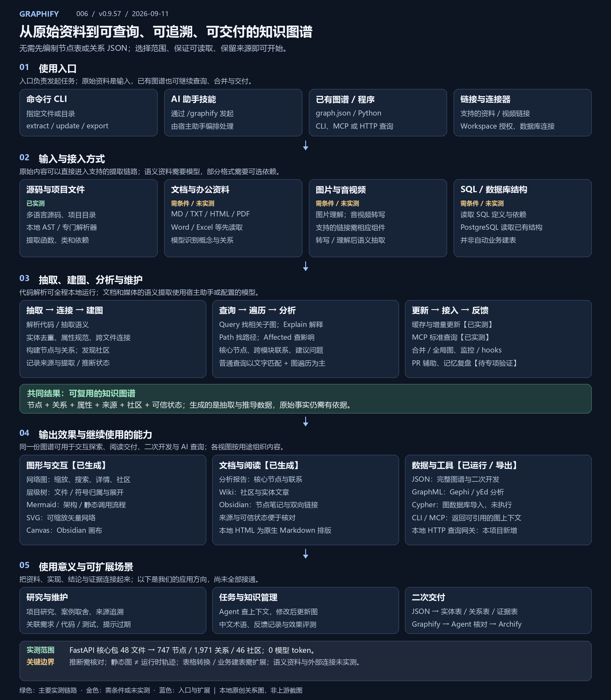

代码结构与跨文件关系
提取类、函数、调用、导入、继承及源码说明。保留来源、关系类型与可信状态。
查看完整网络 ↗006 / OPEN SOURCE RESEARCH
支持将源码、文档、PDF、Word/Excel、图片、音视频及 SQL 结构提取为可查询知识图谱；代码本地解析，语义资料需模型。输出交互网络、层级树、调用流程、SVG/Canvas、报告/Wiki，以及 JSON、GraphML、Cypher，辅助研究、依赖追踪与证据交付。
INPUT → PROCESS → OUTPUT → USE
Graphify 可以直接处理尚未整理成关系图的资料，从中提取实体与关系，生成可查询、可分析、可交付的知识图谱。图形只是结果的一部分。

可以从命令行指定文件夹，也可在 AI 助手中通过 /graphify 技能发起。已有 graph.json 可供 CLI、MCP 或程序继续查询；这些是使用入口，不表示当前演示网页提供任意文件上传。
不需要先人工编制节点表、关系表或指定 JSON。先选择资料范围，保证内容可读取并保留出处即可；更清晰的命名、结构和上下文有助于抽取，资料中的错误、歧义和缺失仍会影响结果。
| 输入 | 接入与处理方式 | 本次状态 |
|---|---|---|
| 源码与项目文件 | 支持多种语言；本地 AST / 语法解析，抽取类、函数、调用、导入、继承。部分语言或项目格式有专门解析器。 | FastAPI 核心包 48 个 Python 文件已实测 |
| 文档与办公资料 | Markdown、文本、HTML、Word、Excel、PDF 等；读取或转换内容，再经模型抽取语义，部分格式需要可选组件。 | 语义链路未实测 |
| 图片与音视频 | 模型理解图片；音视频通常先转写再抽取，支持的链接需要下载/转写组件。 | 需要媒体、模型与依赖，未实测 |
| SQL 与数据库结构 | 读取 SQL 中的结构与依赖，或连接 PostgreSQL 读取已有 schema。 | 数据库接入未实测 |
| 已有图谱与授权资料 | 可合并已有图；Google Workspace 快捷文件需要授权导出内容后处理。 | 合并、全局图与 Workspace 未实测 |
生成的是从资料抽取或推导出的知识数据：实体、关系、属性、来源与可信状态。它不自动保证输入事实正确，EXTRACTED / INFERRED / AMBIGUOUS 也不是校准后的正确率。
普通 CLI 查询先用文字匹配定位图中入口，再进行图遍历，按范围和预算返回证据。自然语言提问不等于每次都调用模型生成完整答案；宿主助手可进一步阅读证据并解释。
| 处理 | 支持到什么程度 | 边界 |
|---|---|---|
| 抽取与建图 | 解析代码或语义，规范属性、合并去重、连接跨文件关系，生成 NetworkX 图。 | 动态调用和含糊描述可能漏连或误连 |
| 关系分析 | 发现密集社区、核心节点、跨模块联系，并生成建议问题。 | 算法社区不直接等于经确认的业务模块 |
| 查询与影响 | Query 找相关子图；Explain 解释节点；Path 找连接路径；Affected 反向查潜在依赖方。 | 查询有范围/预算；静态影响不能代替测试 |
| 更新与协作 | 缓存、增量更新、合并图、全局图、监控、Git hooks、PR 辅助及记忆复盘。 | 本次只验证隔离增量；其余需要专项接入 |
| 生成表格 | 可在完整 JSON 上增加转换规则，输出实体表、关系表、来源表或项目能力表。 | 属于本地可扩展能力，尚未实现 |
| 构建数据库表 | 已有 SQL / PostgreSQL 能力主要用于理解现存结构；Cypher 可交付图数据库节点和关系。 | 自动业务建模、建 SQL 表和数据清洗需另接流程 |
各视图按用途组织内容，不能把任一视图都当作全图。当前网络 HTML 包含全部 747 个节点和 1,971 条关系；树按源码归属组织，调用流程表达静态结构，不是运行时录像。
| 输出 | 可观察或继续使用的能力 | 本次状态 |
|---|---|---|
| 交互网络图 | 缩放、拖拽、搜索、节点详情和社区筛选；探索谁与谁相连。 | 原生 HTML 已生成 |
| 层级树 | 按文件及符号归属展开与收拢，观察层级结构。 | 原生 D3 页面已生成 |
| 架构 / 调用流程图 | 按上游规则组织结构章节与 Mermaid 图，观察静态调用联系。 | 原生页面已生成 |
| SVG 与 Canvas | SVG 可缩放并放入文档；Obsidian Canvas 可在画布中继续浏览。 | 已导出 |
| 报告、Wiki、笔记 | 分析报告、社区/实体文章、Obsidian 节点笔记与链接。 | 已生成；HTML 仅增加阅读排版 |
| JSON / GraphML / Cypher | JSON 用于二次开发；GraphML 交给 Gephi / yEd；Cypher 用于图数据库导入。 | 全部已导出，未连接外部图数据库 |
| CLI / MCP / HTTP | 程序或 AI 助手查询图谱，获得带来源的证据上下文。 | CLI 与 MCP 已实测；演示 HTTP 网关为本地新增 |
下列场景是结合我们的研究仓库提出的应用方向，尚未全部实现。价值应通过真实任务验证：定位是否更准确、证据是否覆盖、结论是否过期，以及耗时和模型成本是否改善。
| 场景 | 如何扩展 | 意义 |
|---|---|---|
| GitHub 项目研究 | 关联源码、README、研究结论与证据位置。 | 从找到项目进一步到找到实现和依据 |
| 工程案例知识库 | 从已精读材料提取问题、约束、方案、代价与来源。 | 比较不同场景的取舍，不从标题补造事实 |
| 重构与文档维护 | 连接需求、设计、代码和测试，结合提交检测变化。 | 提示潜在影响和需要复核的说明 |
| 持续执行的 Agent | 任务前查询相关上下文，修改后更新图并记录反馈。 | 为长任务提供可追溯资料；收益待评测 |
| 图谱转业务表 | 约定实体类型、字段和转换规则，再从 JSON 导出表格。 | 接入能力清单、依赖表、证据表等管理方式 |
| Graphify + Archify | Graphify 提取关系，Agent 核对并整理规格，Archify 绘制讲解图。 | 兼顾事实来源与设计表达；组合尚未接通 |
当前网页固定分析 FastAPI，提供真实查询与产物浏览；没有通用文件上传或在线语义抽取入口。下载完整理解文档 · 固定版本上游说明 ↗
THE NATIVE EXPERIENCE
网络图包含所选语料提取后的全部节点与关系，不做抽样或社区聚合。原生界面保持上游样式与交互，仅将运行依赖改为本地文件。分析对象是 FastAPI 核心包，不是整仓测试和教程。
ASK THE ACTUAL ENGINE
输入符号或问题，调用固定版本的上游 CLI。Query 返回相关子图，Explain 解释节点，Path 追踪有向路径，Affected 查找潜在依赖方。这里不额外调用大模型生成答案。Explain 原生详细列出最多 20 个连接，其余汇总；Affected 默认两跳；全部关系可在网络图与 JSON 中核对。
以下为生成时保存的真实结果；本地服务连接后可重新查询。
下载全部查询记录 ↓WHAT GRAPHIFY CAN DO
“已运行”指本次有真实产物或验证记录。“需外部条件”指上游有相关能力，本次未接入，不能用效果图代替实测。
提取类、函数、调用、导入、继承及源码说明。保留来源、关系类型与可信状态。
查看完整网络 ↗根据图结构找核心实体、密集社区、跨模块联系和建议问题。本次使用 Louvain 回退。
查看原生报告 ↗查询相关上下文，解释节点、追踪方向、反向寻找依赖。保留上游输出与失败信息。
运行与查看证据 ↗三个上游原生查看器展现关系、层级和调用结构。流程图是静态分析，不是运行时追踪。
切换全部视图 ↗生成可阅读的知识文档、节点笔记和画布，或导出 SVG、GraphML、Cypher、JSON。
查看和下载全部产物 ↗通过标准工具接口访问同一张图。协议连接和工具调用结果见运行记录；不等于已验证 Agent 任务收益。
查看实际接入记录 ↗重用未变文件的提取结果，针对代码变化更新图。隔离样例验证前后变化；常驻监控未开启。
查看更新前后证据 ↗将多种资料纳入图，语义抽取使用助手或配置的模型；音视频还需要转写。本次未执行这些生成链路。
SQL / PostgreSQL、全局图、Neo4j / FalkorDB 推送、Git hooks 和 PR 辅助。本次只生成可导入数据，未连接数据库或改变工作流。
保存查询的有用、无效或修正结果，再归纳经验。需要连续真实任务验证，不能从单张图判断收益。
EVERY OUTPUT, WITH EVIDENCE
所选范围为 FastAPI 仓库的 fastapi/ 核心包。所有 Python 文件均参与提取；网络图保留全部节点，树按有来源的文件和符号组织，不触发子节点数量截断。没有扫描 tests、docs_src，也没有导入外部依赖的实现。
下载源文件 SHA-256 清单 ↓GRAPHIFY × ARCHIFY
Graphify 从资料中提取实体和关系，建立可查询的知识图谱；原生网络图呈现提取出的结构。
Archify 接收用户或 Agent 整理的 JSON 设计规格，校验并绘制架构图、工作流、时序图等。它的核心是系统设计的表达与交付。
两者可以互补：Graphify 提供事实线索，Agent 筛选并整理，再由 Archify 绘制讲解图。这个组合尚未接通。